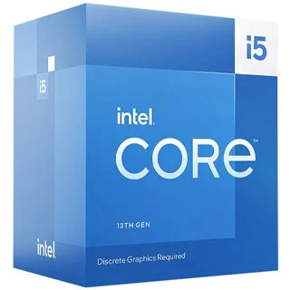
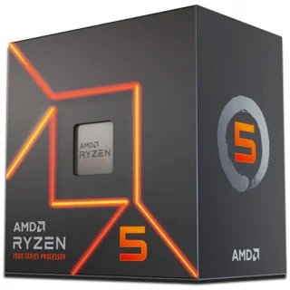

REVIEW | Intel Core i5-13400 precisa custar menos que o Ryzen 5 7600 para valer a pena
Tirando alguns testes multicores, o processador da Intel não é páreo pro Ryzen 5 7600
Esta é a análise/review dos processadores Intel Core i5-13400 e 13400F, modelos intermediários da Intel focados nos consumidores que buscam "o meio do caminho" no line-up da empresa, com bom nível de performance para games e também para aplicações profissionais, mas com um preço mais competitivo que processadores "final K".
Os modelos 13400 e 13400F tem como maior diferença o gráfico integrado, que está presente apenas no Core i5-13400, enquanto o Core i5-13400F não tem vídeo integrado, logo o computador precisa de uma placa de vídeo dedicada para funcionar.
Baseado na microarquitetura híbrida introduzida na 12ª geração Core, os Core i5-13400 trazem um conjunto de seis núcleos de performance e quatro núcleos de eficiência, tecnologia não disponível na geração passada dos modelos Core i5-12400. Frequências levemente mais altas e um pouco a mais de memória cache também estão entre as novidades frente a geração passada.
Em cenário internacional o Core i5-13400 foi lançado por US$221, enquanto o Core i5-13400F foi lançado por US$196. No Brasil é possível encontrar o 13400 por valores na casa de R$1.600, enquanto o modelo 13400F já custa R$1.500, ou seja, apenas R$100 pelo vídeo integrado.
Especificações técnicas
Comparativo
|  |  | |||
| Intel Core i5-13400F |
Intel Core i5-13400 |
Intel Core i5-12400 |
AMD Ryzen 5 7600 |
Preços
| Preço no lançamento | U$ 196,00 | U$ 221,00 | R$ 1.549,00 | U$ 230,00 |
|---|---|---|---|---|
| Preço atualizado | R$ 1.499,99 | R$ 1.599,99 | R$ 1.549,00 | R$ 1.399,99 |
Especificações
| Codinome | Rocket Lake-S | Rocket Lake-S | Alder Lake-S | Zen4 |
|---|---|---|---|---|
| Soquete | LGA1700 | LGA1700 | LGA1700 | AM5 |
| Fabricação em | Intel 7 | Intel 7 | Intel 7 | 5nm |
| Instruções | 64-bit | 64-bit | 64-bit | 64-bit |
| Núcleos | 10 (6p+4E) | 10 (6p+4E) | 6 | 6 |
| Threads | 16 | 16 | 12 | 12 |
| Clock | 2500 MHz | 2500 MHz | 2500 MHz | 3800 MHz |
| Clock (Turbo) | 4600 MHz | 4600 MHz | 4400 MHz | 5100 MHz |
| Desbloqueado | NÃO | NÃO | NÃO | Sim |
| Canais de memória | dual-channel | dual-channel | dual-channel | dual-channel |
| Memórias | DDR4-3200 / DDR5-4800 | DDR4-3200 / DDR5-4800 | DDR4-3200 / DDR5-4800 | DDR5-5200MHz |
| Cache | 20 | 20 | 18 | 32+6 |
| PCI Express | 5.0 | 5.0 | 5.0 | 5.0 |
| Canais PCI Express | 20 (CPU) | 20 (CPU) | 20 (CPU) | 28 |
| TDP (W) | 65W / 148W(Turbo) | 65W / 154W(Turbo) | 65W / 117W (Turbo) | 65 |
Vídeo Integrado
| GPU | NÃO | Intel UHD Graphics 730 | Intel UHD Graphics 730 | AMD Radeon Graphics RDNA2 |
|---|---|---|---|---|
| Clock | - | 1550 | 1450 | 2200MHz |
| Nº de Cores | - | 24 | 24 | 2 |
| DirectX | - | 12 Ultimate | 12 | 12 Ultimate |
Características Gerais
| Acompanha cooler? | SIM | SIM | Laminar RS1 | AMD Wraith Stealth |
|---|
A 13ª geração Intel Core codinome Raptor Lake
A 13ª geração Intel Core, codinome Raptor Lake, parte das fundações dos produtos Alder Lake para seu desenvolvimento, trazendo melhorias com o objetivo de buscar mais performance e eficiência. De acordo com estimativas da Intel, o ganho em performance por thread é de 15%, enquanto o multithread dessa geração trará um incremento de 41% sobre produtos equivalentes da geração anterior.
Os processadores Raptor Lake são baseados no processo de fabricação em 10nm SuperFin, sendo que a Intel fez aprimoramentos nessa que é a terceira geração dessa tecnologia batizada pela empresa de processo Intel 7. A Intel mantém o conceito de arquitetura híbrida introduzido com os modelos da 12ª geração, codinome Alder Lake, com núcleos de performance e núcleos de eficiência compondo o processador e sendo usados de forma dinâmica de acordo com a demanda dos processos que ocorrem no sistema.
Os Raptor Lake compartilham das estruturas básicas dos Alder Lake
Junto com o lançamento da 13ª geração Intel Core foi introduzida uma nova linha de chipsets, a série 700, que inclui incrementos na quantidade de linhas PCIe e foi adicionadas conexões USB 3.2 Gen 2x2 de 20Gbps nativamente. Ela será necessária apenas para os consumidores que desejam esses incrementos em I/O, mas donos de uma plataforma 600, ou quem não tem mas quer aproveitar o custo mais baixo das mainboards já no mercado, e não necessitam desses upgrades, podem manter a plataforma anterior sem problemas. Mesmo sem grandes a atualizações, a plataforma Raptor Lake não tem problemas de estar desatualizada, já que tecnologias mais recentes como o PCIe 5.0 e o DDR5 já estão disponíveis desde a série 600 e os Alder Lake.
A base dos núcleos de performance (p-cores), os Raptor Cove, incrementam a velocidade de comunicação entre módulos em até 600MHz e introduzem 2MB de memória cache nível 2 (L2 cache) por núcleo, um incremento sobre os 1,25MB do modelos Alder Lake. Outra novidade é o novo algoritmo de prefetch mais eficiente, que desloca para o cache dados que serão necessários para processamentos, com mais antecedência e precisão.
A 13ª geração traz incrementos na quantidade de cache e no número de núcleos
Já na ponta dos núcleos de eficiência (e-cores) temos o maior incremento da 13ª geração. Os modelos Raptor Lake vão contar com o dobro dos e-cores comparado a modelos semelhantes da geração anterior. Isso amplia o Core i9 13900K para um total de oito núcleos de performance e 16 núcleos de eficiência, somando um total de 24 núcleos e 32 threads. Seu antecessor, o 12900K trazia 16 núcleos e 24 threads. Esse aumento no número de núcleos é um dos principais responsáveis pelo aumento de desempenho em multithread dessa geração. Por conta da maior quantidade de núcleos disponíveis, e com mais cache em cada núcleo ou cluster de núcleos, um processador Raptor Lake pode ter mais que o dobro de L2 cache disponível, com o Core i9-13900K trazendo 34MB versus os 14MB do Core i9-12900K, por exemplo. O cache de nível 3 (L3 cache) também foi levemente ampliado, subindo de 30MB para 36MB nesse modelo topo de linha da família Core.
Já na parte de latência e largura de banda das memórias, temos importantes melhorias. O suporte a memórias foi ampliado para velocidades maiores, conseguindo 5600MT/s quando é colocado uma memória por canal, enquanto o fabric, que faz a conectividade entre os módulos do chip, tem uma frequência de operação 900MHz mais rápida.
Aumento das frequências e mais potencial de overclock estão entre os destaques
Mas o principal ganho de performance por thread atende por outro fator: o aumento das frequências de operação. Os Intel Raptor Lake já saem de fábrica com boosts que podem chegar a 5.8GHz em seus núcleos de performance, com modelos específicos podendo operar em 6GHz, enquanto os núcleos de eficiência sobem dos 3.9GHz dos Alder Lake para até 4.3GHz nos Raptor Lake. Em overclock essa microarquitetura pode chegar a valores impressionantes, com testes internos da Intel já rompendo a barreira dos 8GHz, e memórias DDR5 alcançando os 10.000MT/s.
Fotos do Intel Core i5-13400
O Intel Core i5-13400 e o 13400F seguem o mesmo formato dos demais modelos de processadores Intel Core de 12ª e 13ª geração baseados no socket LGA 1700. Lembrando que a compatibilidade com placas-mãe com chipset serie 600 acontece após a atualização de bios das placas.
O cooler box do Intel Core i5-13400 e 13400F segue o novo padrão adotado pelos modelos Core de 12ª e 13ª geração, com consideravelmente melhor do que as gerações anteriores.